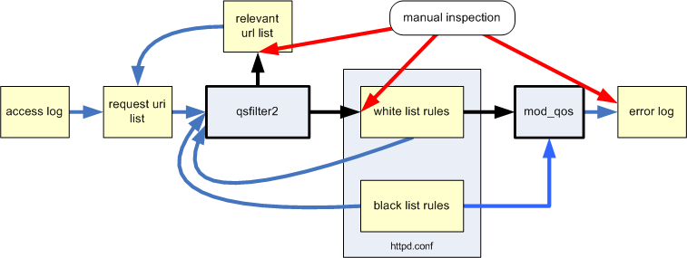

mod_qos, qsfilter2
mod_qos implements a request filter validating each request line. The module supports both, negative and positive security model. The QS_Deny* directives are used to specify request line patterns which are not allowed to access the server (negative security model / blacklist). These rules are used to restrict access to certain resources which should not be available to users or to protect the server from malicious patterns.
Ths QS_Permit* rules implement a positive security model (whitelist). These directives are used to define allowed request line patterns. Request which do not match any of thses patterns are not allowed to access the server.
qsfilter2 is an access log analyzer used to generate request line whitelists which may be used by mod_qos in order to restrict server access to known resources only. It parses existing access log files in order to generate request line patterns cover all allowed request URIs.
Data Sources
Rule generation requires the following input:
- Existing access log data: Request URIs from existing access log files are the main input data used by qsfilter2. qsfilter2 reads this data from an input file. Each line of the input file contains a request URI consiting of a path and and query. These access log data must include current request URIs but also request lines from previous rule generation steps. It must also include request lines which cover manually generated rules.
Example input file loc.txt:/aaa/index.do /aaa/edit?image=1.jpg /aaa/image/1.jpg /aaa/view?page=1 /aaa/edit?document=1 |
- Predefined rules (optional): qsfilter2 generates rules from access log data automatically. Manually generated rules may be provided from a separate rule file (each manual rule must be represented by a request URI in the input data in order to make sure not to be deleted by the rule optimisation algorithm of qsfilter2).
- Blacklist (optional): QS_Deny* rules may be used to filter request lines which should not be used for whitelist rule generation.
Example input rule file qos_filter.conf:# Predefined: manually defined whitelist rule: QS_PermitUri +view deny "^[/a-zA-Z0-9]+/view\?(page=[0-9]+)?$" # Blacklist: filters unwanted request line patterns: QS_DenyRequestLine +printable deny ".*[\x00-\x19].*" |
Output
The output of qsfilter2 is written to stdout. The output contains the
generated QS_PermitUri directives but also information about the
source which has been used to generate these rules. It is very
important to check the validity of each request line which has
been used to calculate the QS_PermitUri rules. Each request line
which has been used to generate a new rule is shown in the
output prefixed by ADD line <line number>:. These
request lines should be stored and reused at any later rule
generation (add them to the URI input file). The subsequent line
shows the generated rule.
At the end of data processing a list of all generated QS_PermitUri rules is shown. These directives may be used withn the configuration file used by mod_qos.
Example output:
./qsfilter2 -i loc.txt -c qos_filter.conf -m
...
# ADD line 1: /aaa/index.do
# 003 ^(/[a-zA-Z0-9-_]+)+[/]?\.?[a-zA-Z]{0,4}$
# ADD line 3: /aaa/view?page=1
# --- ^[/a-zA-Z0-9]+/view\?(page=[0-9]+)?$
# ADD line 4: /aaa/edit?document=1
# 004 ^[/a-zA-Z]+/edit\?((document)(=[0-9]*)*[&]?)*$
# ADD line 5: /aaa/edit?image=1.jpg
# 005 ^[/a-zA-Z]+/edit\?((image)(=[0-9\.a-zA-Z]*)*[&]?)*$
...
QS_PermitUri +QSF001 deny "^[/a-zA-Z]+/edit\?((document|image)(=[0-9\.a-zA-Z]*)*[&]?)*$"
QS_PermitUri +QSF002 deny "^[/a-zA-Z0-9]+/view\?(page=[0-9]+)?$"
QS_PermitUri +QSF003 deny "^(/[a-zA-Z0-9-_]+)+[/]?\.?[a-zA-Z]{0,4}$"
|
Options
qsfilter2 provides multiple command line options to control the rule generation.
qsfilter2 -i <path> [-c <path>] [-d <num>] [-b <num>] [-p|-s|-m] [-n] [-e]
-i <path>
Input file storing the request url (path and query) from
the access log (one request per line).
-c <path>
mod_qos configuration file defining QS_DenyRequestLine and
QS_PermitUri directives.
-d <num>
Depth (sub locations) of the path string which is defined
as a literal string. Default is 1.
-b <num>
Replaces url pattern by the regular expression when detecting a
base64 encoded string. Detecting sensibility is defined by a numeric
value. You should use values higher than 5 (default) or 0 to disable
this function.
-p
Repesents query by pcre only (no literal strings).
-s
Uses one single pcre for the whole query.
-m
Uses one pcre for multipe query values (recommended).
-n
Disables redundant rules elimination.
-e
Exit on error.
|